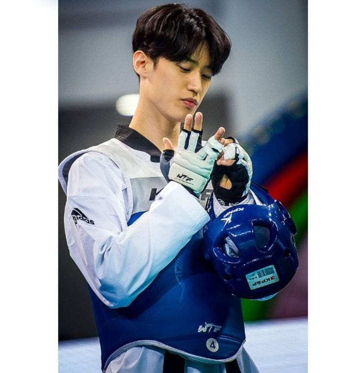

Lee Dae-Hoon:taekwondista surcoreano
Autor:JOEl ENCINOS

Definición:
Lee Dae-Hoon es un taekwondista surcoreano que ha dominado la escena internacional durante más de una década. Su talento, disciplina y dedicación lo han convertido en una leyenda en este deporte. Su éxito no solo se debe a su talento natural, sino también a su enfoque en la preparación mental. Lee ha hablado en varias entrevistas sobre la importancia de la fortaleza mental para enfrentar la presión de las grandes competencias, especialmente en los Juegos Olímpicos y campeonatos mundiales.
Características:
- Agilidad y Velocidad: Uno de los aspectos más destacados del estilo de combate de Lee es su increíble agilidad. Es capaz de moverse rápidamente alrededor de sus oponentes, manteniendo una distancia estratégica y ejecutando patadas precisas con una velocidad impresionante.
- Patadas Versátiles:Lee es conocido por su capacidad para lanzar una variedad de patadas con rapidez y precisión. Su patada al rostro es una de sus armas más letales, que usa para sorprender a sus rivales. También es experto en patadas giratorias y patadas a corta distancia, lo que lo convierte en un peleador impredecible y difícil de controlar..
- Adaptabilidad: Una de las mayores fortalezas de Lee es su capacidad para leer a sus oponentes y ajustar su estilo de combate en medio de una pelea. Esta habilidad lo ha ayudado a vencer a una gran variedad de oponentes con diferentes estilos, demostrando una excelente inteligencia táctica.
- Condición Física: A lo largo de su carrera, ha mantenido una impresionante condición física. Su resistencia y capacidad para mantener un alto nivel de intensidad durante toda una pelea han sido clave para su éxito en campeonatos de larga duración.